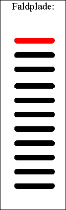

at bevægelse en jævnt voksende.
at bestemme tyngdeaccelerationen g
Til øvelsen benyttes en LabPro med fotogate. Desuden benyttes en »lineal« af acryl. På denne er tapet sorte striber for hvor 5.0 cm. Når linealen falder gennem fotogaten måles tiden hver gang lyset afbrydes.

Dette bliver vist dit hurtigste fysikforsøg til dato, thi straks linealen er faldet på gulvet - på en blød faldplade - er forsøget færdigt, og du kan behandle dine data på pc-en.Når udstyret er stillet op, tændes for pc-en og programmet Datalyse startes. Vælg apparat LabPro og vælg Timer i menuen for LabPro.
Tæl antallet af striber på din faldplade. Mål også afstanden mellem dem. Disse tal indtastes i Datalyses målemenu.
Vær forsigtig, når du slipper pladen. Den må ikke røre fotogaten! Sker det, må du lave forsøget om.
Datalyse tegner automatisk (t, s)-grafen.
For at kunne beregne tyngdeaccelerationen skal du vælge differentiation og vælge f ' (t), herved tegnes (t, v)-grafen. Benyt herefter den lineære regression til beregning af g.
Gentag forsøget!
Beregn eventuelt gennemsnit af g for 10 faldforsøg.
Vurder dine grafer og dine ekstra målinger af g.